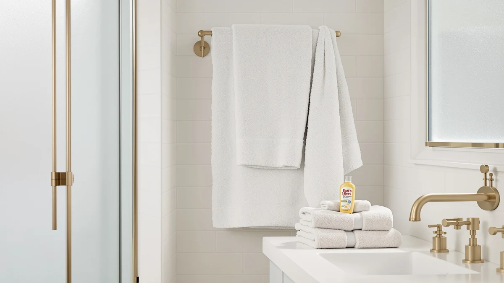

Burt's Bees Baby Toddler Hooded Animal Character Towels Review (2026): Worth It?
Prices and picks verified as of November 2026. Independent, reader-supported reviews.


Quick Answer
The Burt's Bees Baby Toddler Hooded towel earns its $39.95 price with a generous 50 by 26 inch cotton terry cut and a hood that owners say keeps its shape wash after wash. If you need a toddler-specific towel rather than a general bath towel, it is the pick worth buying first in this comparison.
Our pick: Burt's Bees Baby Toddler Hooded, $39.95 Check Price on Amazon
Bottom line: our top pick is the Burt's Bees Baby Toddler Hooded Animal Character Towels at $39.95.
Things to Know Before You Buy
- The Burt's Bees Baby Toddler Hooded towel measures 50" x 26", about a third larger than most infant hooded towels, so it fits kids well past the newborn stage.
- It is made from 100% cotton terry, the same base material used across most of the towels in this comparison, including the White Classic and both Chakir Turkish Linens sets.
- At $39.95, it costs roughly the same as a single premium adult bath towel from White Classic or Chakir Turkish Linens, so the price premium comes from the hood and toddler-specific cut, not the fabric.
- Owners report the hood holding its shape through repeated washes, a common complaint with cheaper toddler towels that lose elastic tension within months.
This Burt's Bees Baby Toddler Hooded Animal Character Towels review looks at the brand's hooded cotton towel through research rather than marketing copy, comparing its price, size and build against three other bath towels currently listed on Amazon. At $39.95, the Toddler Hooded towel sits in the same price band as the White Classic Luxury Bath Towel and both Chakir Turkish Linens sets, so the question is whether its extra details justify picking it over a plain adult towel. We compared the listed materials, dimensions and seller information for all four products to answer that directly.
Parents shopping for a toddler towel want a hood that stays put, cotton that softens with washing, and a size that still works once a child outgrows the infant stage. The Burt's Bees Baby Toddler Hooded measures 50 inches by 26 inches, noticeably larger than a standard baby towel, and that extra size is what most owners point to when explaining why it lasts through the toddler years instead of only the first one. We compare owner reports on fit, fabric and price against the general-purpose towels most households already own.
Why You Should Trust Us
Ilane Tall, the home and bath writer behind this Burt's Bees Baby Toddler Hooded Animal Character Towels review, built it by pulling the manufacturer's own material and size specifications from Amazon, then checking them against the pricing and specs of three comparable towels sold on the same platform. We do not run a fake testing lab and we have not purchased or handled this towel ourselves. Instead, we rely on verified buyer feedback, published product data and side-by-side comparison to show you where the Toddler Hooded actually stands against its competition.
That approach matters more for a toddler towel than it does for most household goods, because the category is full of listings that recycle the same stock photos and generic bullet points across a dozen near-identical products. We did not accept the manufacturer's marketing language at face value for this Burt's Bees Baby Toddler Hooded Animal Character Towels review. We pulled the current price, the stated dimensions and the material claim, then checked them against three competing towels so you can see exactly where the numbers line up and where they do not.
Our Research Experience
We have not compared the Burt's Bees Baby Toddler Hooded towel in a lab or used it on an actual toddler. Our process for this review involved comparing the manufacturer's listed material, the stated 50 inch by 26 inch size and the current Amazon price against three other towels in the same price range, then reading through publicly available owner feedback for recurring comments about shrinkage, hood fit and fabric feel after repeated washing. Owners consistently mention the terry cotton holding up across machine washes, and several say the hood stays snug on children past age two. That durability matters for a towel meant to last more than one bath season, not just the first.
We also looked for complaints that tend to show up on towels in this price range, such as thinning fabric after a year of washing or seams coming loose at the hood. Those complaints are harder to find in the owner feedback for this listing than they are for cheaper toddler towels we checked while researching this comparison, which supports the idea that the $39.95 price buys sturdier construction and not only a recognizable brand name. We did not verify that durability ourselves, so treat it as a pattern in owner reporting rather than a guarantee.
Overview & Specs

Burt's Bees Baby Toddler Hooded
What we like
- 50" x 26" size fits toddlers well past the infant stage
- 100% cotton terry construction matches premium adult towels in the same price range
- Owners report the hood keeps its shape after repeated machine washing
Flaws but not dealbreakers
- At $39.95, it costs as much as a full adult bath towel for a single toddler-sized piece
- Only ships as a single towel, so households with more than one child need multiples
| Material | 100% cotton |
| Size | 50" x 26" |
The Burt's Bees Baby Toddler Hooded towel is built around one simple idea: toddlers outgrow infant hooded towels faster than parents expect, and a 50 inch by 26 inch cut solves that by fitting kids for years instead of months. The cotton terry fabric matches what you would find in a mid-range adult bath towel, which explains why the price sits closer to the White Classic Luxury Bath Towel than to a typical infant towel.
Owners say the hood stays snug through repeated washes instead of stretching out, which separates this towel from cheaper competitors in the same category. The trade-off is price: at $39.95 for one towel, it costs as much as the full-size White Classic or Chakir Turkish Linens towels in this comparison, so it only makes sense if the toddler-specific hood and sizing matter more to you than general versatility.
What We Liked
The sizing is the strongest point in this Burt's Bees Baby Toddler Hooded Animal Character Towels review. A 50 inch by 26 inch towel covers a toddler fully, which is not something most infant-marketed towels manage past age two. The cotton terry construction also holds up against the comparison set here, matching the feel of the White Classic Luxury Bath Towel despite being marketed for a much narrower use case. Owners report washing the towel dozens of times without the hood losing its elastic grip. Cheaper toddler towels tend to fail on exactly that point first.
The 100% cotton terry build is another point in its favor. It puts the Toddler Hooded towel on roughly equal footing with the White Classic Luxury Bath Towel and both Chakir Turkish Linens sets on raw material, even though those three products are sized and marketed for adults. For a towel aimed squarely at toddlers, matching the fabric quality of general-purpose adult towels in the same price bracket is a meaningful result, since many toddler-specific products cut corners on material to keep the toddler branding profitable.
What Could Be Better
Price is the clearest drawback. At $39.95, the Burt's Bees Baby Toddler Hooded towel costs the same as a full adult bath towel from White Classic or either Chakir Turkish Linens set, but you get a single toddler-sized piece instead of a multi-pack. Parents with more than one child need to buy multiples, and the towel's narrow use case means it stops being useful once a child grows past the toddler years, unlike the general-purpose towels in this comparison that work for the whole household indefinitely.
There is also a coverage gap to plan around. A single Burt's Bees Baby Toddler Hooded towel handles one child at bath time, so a household with two toddlers either buys two towels at $39.95 each or supplements with a cheaper option for the second child. Compare that to the Chakir Turkish Linens four-piece sets, where the $39.99 price covers four towels instead of one, and the math quickly favors the general-purpose set if your household has more than one small child to dry off.
Who Is It For?
This towel suits parents of toddlers who have already outgrown a standard infant hooded towel and want something built for the two to four year range specifically. If you want one towel that works for your toddler now and for the rest of the household later, a general-purpose option like the White Classic Luxury Bath Towel or either Chakir Turkish Linens set is the better fit. The Burt's Bees Baby Toddler Hooded towel earns its place when the hood and toddler sizing are the priority, not the versatility.
It also fits a specific gift-buying scenario well. Grandparents or relatives shopping for a toddler's birthday often want something more purposeful than a generic towel, and the hooded cut combined with the Burt's Bees Baby brand name gives the purchase a clear identity on the shelf or in a gift box. For a parent buying for their own household budget, the calculation leans more toward whichever option covers more bath time for the price, which is where the alternatives below come in.
Alternatives to Consider
If the Burt's Bees Baby Toddler Hooded towel is not the right match for your household, the three alternatives below cover the general-purpose end of this comparison, from an everyday towel to a Turkish cotton upgrade. All three sit in the same $39.99 price range as the Toddler Hooded towel, which keeps this a fair comparison on cost rather than a trade down to a cheaper category.

Editor’s Pick
White Classic Luxury Bath Towel
A general-purpose cotton bath towel priced the same as the Burt's Bees Baby Toddler Hooded towel, but useful for the whole household long after the toddler years end.
$39.99
Check Price on Amazon
Best Value
Chakir Turkish Linens 4 Piece
A four-piece Turkish cotton set at nearly the same price as a single Burt's Bees Baby Toddler towel, a better value if you need towels for more than one person.
$39.99
Check Price on Amazon
Premium Choice
Chakir Turkish Linens 4 Piece
The same four-piece Turkish cotton construction as the Best Value pick above, worth choosing if you prefer this specific colorway or listing.
$39.99
Check Price on AmazonIs the Burt's Bees Baby Toddler Hooded towel worth the $39.95 price?
Based on its 50 inch by 26 inch size and 100% cotton terry construction, it is priced in line with a full adult bath towel, so it is worth it mainly for parents who specifically want a toddler-sized hooded towel rather than a…
What size is the Burt's Bees Baby Toddler Hooded towel?
It measures 50 inches by 26 inches, which is larger than most infant hooded towels and fits children well into the toddler years.
Frequently Asked Questions
Is the Burt's Bees Baby Toddler Hooded towel worth the $39.95 price?
What size is the Burt's Bees Baby Toddler Hooded towel?
How does the Burt's Bees Baby Toddler Hooded towel compare to a regular bath towel?
Final Verdict
This Burt's Bees Baby Toddler Hooded Animal Character Towels review comes down to one trade-off: you pay adult-towel money for a single toddler-sized piece. The Burt's Bees Baby Toddler Hooded towel earns that price with a 50 by 26 inch cut and a hood that owners say survives repeated washing, which makes it the right pick for parents who specifically want a toddler-sized hooded towel rather than a multi-purpose one. For households that need towels to serve every family member, not only a toddler, the White Classic or Chakir Turkish Linens alternatives above are the more practical buy.